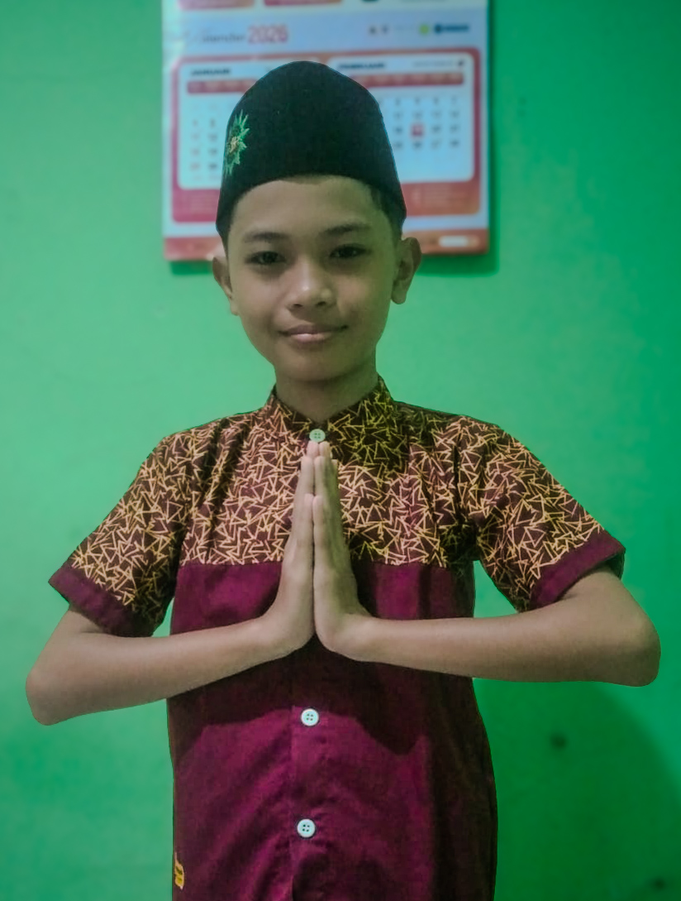

Assalamu'alaikum Warahmatullahi Wabarakatuh
Dengan memohon rahmat dan rida Allah SWT, kami mengundang Bapak/Ibu/Saudara/i untuk menghadiri acara syukuran khitanan putra kami:

"Semoga menjadi anak yang saleh, berbakti kepada orang tua, agama, bangsa, dan negara. Aamiin."
Merupakan suatu kehormatan dan kebahagiaan bagi kami apabila Bapak/Ibu/Saudara/i berkenan hadir untuk memberikan doa restu.
Wassalamu'alaikum Warahmatullahi Wabarakatuh